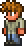
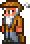
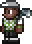
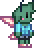

Citizen Feedback

The Guide
"I've sunk 4,500 hours into this masterpiece and have not regretted a single one.
If you're looking for an awesome sandbox builder game mixed with epic bosses and worlds, then this game is for you. Ten stars out of five!"
KittoMen
"I've never actually taken the time to write out a real review of a game, but this one absolutely deserves it.
Terraria was my first ever game on PC and was the entire reason for me getting one. I had originally started playing the game on my Xbox 360, only to later beg my parents to buy me a computer so that I could play the 1.2 update. After that, I spent hours grinding through the game. It was shortly after my first time completing the game during 1.2 that I played the game again with friends. Though not a memorable experience in of itself, it did pave the way for those friendships to evolve further.
Then we get to the release of the 1.3 update in the summer of 2015. I absolutely lost my sh*t for this update. For months my friends and I planned to play through the game again and spend time exploring all the new content. That was my first character that ever surpassed 100 hours of playtime.
After that initial playthrough with my friends, I would periodically revisit the game on my own and with my friends for years. Sometimes there would be mods, sometimes it would be the original experience. Regardless of how I played, I never ever got bored with the game. I may only have 1600 hours across 6 years, but each one of those hours was spent in the game having a blast and completing my saves for each character I played on.
With the Journeys end update coming out earlier this year, an update I have played through and through, I have finally managed to scrounge up the courage to say goodbye to this game. That doesn't mean that I'm going to stop playing it, that will never be a feasible option to me, especially with a game that has shaped my childhood. This review serves as a ode to an amazing game that has changed my life, as well as a way for me to cope with the game no longer receiving updates.
I will forever thank the wonderful company of Re-Logic for an amazing product and the community that has surrounded the game for sharing such a novel game with me.
Goodbye Re-Logic, and I look forward to future endeavors.
Sincerely, Katie Dixon AKA KittoMen"

The Merchant
"Terraria is like a classic RPG game. There are so many things to do like exploring, building, and fighting bosses."
The Pirate
"I really wanted to enjoy this game, but I instead was incredibly frustrated and then disappointed.
Probably the biggest thing that bothered me is how often I had to or was encouraged to by others to look up the wiki. It was my first playthrough of the game and I really wanted to have fun exploring and making new discoveries. Instead I had to look up lots of various things to progress. Much of the knowledge I had about progressing was either from friends or from searching it online. The guide NPC isn't very helpful for what to do next, offering vague advice. This takes out any mystery and fun out of the game because I then know exactly what's gonna happen. A few things still surprised me, but if I wanted to make real progress, or prevent the evil biomes from spreading to villages, I'd have to do some searching and reading.
Other things I can't stand are evil biome spreading and unfair deaths. If a friend hadn't told me, I would've let the evil biome spread and it would've taken over my main village. Unfortunately it took over my desert and I lost my village there, and in order to rescue it I need to get powerful enough to fight a certain boss type to get an item to cleanse it. I don't want to worry about a biome taking over everything, and it would've been extremely detrimental if I hadn't known it did.
What also made my life miserable as a beginner were traps. Traps are everywhere underground, and they are NOT fun to deal with. You'll need to spot a tiny block or the tiniest of pressure plates in order to prevent an arrow from shooting you or a boulder from crushing you. Once when a boulder fell it chased me and killed me, probably because the developers thought it'd be funny. What really annoys me is the attitude people have about traps, like it's just a thing everyone deals with and that they're funny. I just found them incredibly annoying and they deterred me from wanting to keep playing. Luckily death isn't too punishing (unless you're on a higher player difficulty).
I can see why some people like this game, but I don't. There's too many things in the way and I found myself constantly frustrated. Friends make it a bit more fun if you do want to get through it."

The Golfer
"This game is definitely a must-buy.
It's one of the best sandbox games ever made and it's constantly being updated with new content."

The Lacewing
"I had a really hard time getting into this game for years; i had preconceived notions that it
was similar to minecraft or any other crafting + survival game, but i was kinda dead wrong.
there are so many facets to this game that make it both a steep learning curve (in my
opinion) and deeply enjoyable experience. when i first played i had a hard time figuring out
what direction the game wanted me to take, and it lead to me getting bored or disinterested
within an hour of playing EVERY TIME. the progression wasn't presented in a way that felt
clear and obvious to me, so i would give up.
i managed to give it a fourth try this year after owning the game for YEARS, and something
finally clicked. the progression, combat and even the \"chill\" moments of just building houses
and exploring around in the caves like a loot goblin feel amazing. this game can be whatever
experience you want it to be. i can play it when im fatigued and just want to relax, or when
im in the mood for combat; i absolutely adore this game and cant wait to make more
progress. 10/10."